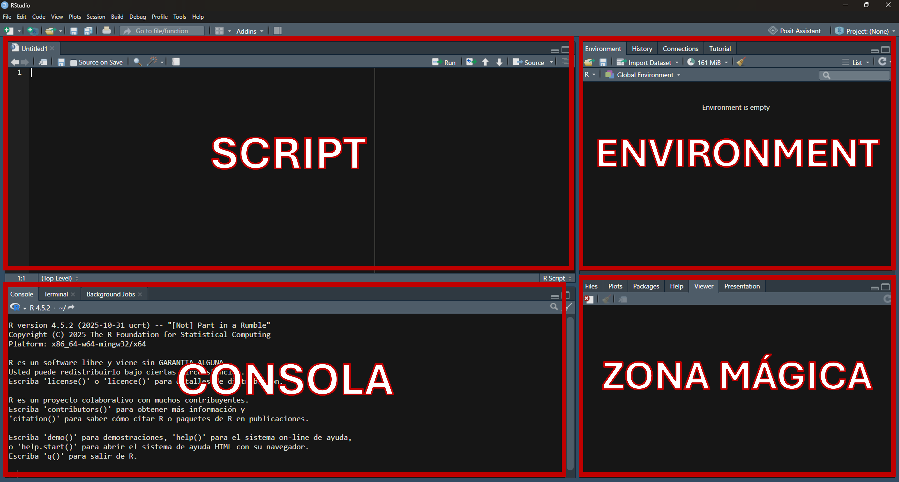

# Esto es un comentario. No se enviará a la consola.1. Primeros pasos con R y RStudio
1.1. Paneles de RStudio
Al abrir RStudio encontramos cuatro paneles diferenciados.

- El script. Es un fichero de texto simple donde escribimos los comandos que vamos a ejecutar, además de los comentarios que queramos aportar.
Podemos escribir comentarios en nuestro script precediéndolos de una almohadilla (#). Los comentarios sirven para los humanos; no los interpreta (ejecuta) R.
Si no hay ningún script activo podemos crear uno haciendo click en el botón adecuado o pulsando CTRL + SHIFT + N.
NOTA: Se pueden crear más tipos de ficheros, es decir podemos utilizar esta zona de la pantalla para escribir código.
- El entorno de trabajo (environment): muestra los objetos que hemos creado o están activos (existen como objetos en ese momento). En otra pestaña encontramos el historial de comandos: muestra todas las órdenes que le hemos dado a R para que ejecute.
- La zona mágica. Contiene varias pestañas. Podemos elegir entre ver los directorios de trabajo y ficheros, los plots, los paquetes instalados o la ayuda.
- La consola: en la consola se ejecutan los comandos/órdenes es la zona más importante. Podemos escribir nuestros comandos aquí directamente + ENTER o escribirlos en el script y mandarlos a la consola pulsando CTRL + ENTER / también se puede apretar el botón ‘Run’.
1.2. R ¿Script o consola?
¿Por qué todo el mundo usa scripts si la consola es quien ejecuta todas las órdenes?
Los scripts son la forma de guardar el código que desarrollamos y contiene una serie de órdenes que están relacionadas entre sí (buscan un mismo objetivo; e.g. leer y visualizar un fichero).
Si vamos a ejecutar una tarea muy simple, por ejemplo una operación matemática, podemos hacerlo directamente en la consola, pero cuando esa tarea comprende múltiples pasos lo mejor es que podamos guardarlo en un fichero, el script.
Un buen script debe ser entendible para quien lo quiera leer, incluso para personas que tienen sólo conocimientos básicos de R. Para ello, aparte de utilizar buenos nombres de variables, usaremos comentarios #. Cuantos más documentado quede nuestro código, mejor! >Al final de este apartado habrá algunas consideraciones prácticas sobre cómo escribir un script.
Durante el desarrollo de un script habrá muchos intentos que den errores, no funcionen, etc. Guarda sólo lo que sí funcione y borra los intentos previos.
La consola guarda muchas acciones ejecutadas en ella (sólo tienes que pulsar la tecla superior de navegación para ir pasando comandos previos ejecutados), pero lo hace ejecución a ejecución, de manera que no tenemos una visión general de todo lo que hemos desarrollado, siendo más sencillo el uso del script para revisar qué código hemos ejecutado previamente.
1.3. R como calculadora
Podemos usar R simplemente como una calculadora:
3 + 3
## [1] 6
27 / 6.5
## [1] 4.153846
1i * 1i
## [1] -1+0iHay algunos operadores que nos pueden resultar útiles:
24 %% 6 # da el resto de la divisón
## [1] 0
23 %% 6 # da el resto de la divisón
## [1] 5
23 %/% 6 # da la división entera, sin decimales
## [1] 3
exp(7) # exponencial de un numero
## [1] 1096.633
sqrt(36) #raiz cuadrada
## [1] 6
log(10) # logaritmo con base e / logaritmo neperiano
## [1] 2.302585Podemos usar R para comparar información
24 > 6
## [1] TRUE
6 > 6
## [1] FALSE
1 == 6 # == simbolo de igualdad
## [1] FALSE
6 == 6
## [1] TRUE
6 != 6 # == simbolo de distinto
## [1] FALSE
7 >= 6
## [1] TRUE
7 <= 6
## [1] FALSE
7 >= 7
## [1] TRUE1.4. Asignación de objetos
Como hemos comentado previamente programar consiste, en gran medida, en guardar información en la memoria del ordenador (RAM; Random Access Memory). Si estamos ejecutando R puede que parte de la información guardada en la sesión sea algún objeto. Para guardar objetos en R hay que asignarles un nombre.
En R, la asignación se hace con el operador <- (existen otras maneras de asignar menos recomendadas).
Los nombres de los objetos sólo pueden empezar por una letra o por un punto, aunque el punto no puede estar seguido de un número. No pueden empezar por un número ni por ’_’. También hay palabras reservadas bajo la que no podrás guardar objetos, para ver la lista entera (?Reserved).
a <- 24
b <- 6
a / b
## [1] 4
a %% b
## [1] 0
a %/% b
## [1] 41.5. Nombres de objetos y scripts
1.5.1. Cómo escribir nombres de objetos
Existen varias prácticas para escribir nombres de objetos. Las dos más extendidas son:
- snake_case: Las palabras van separadas por una barra baja y en minúsculas, e.g. my_function, number_of_trees.
- camelCase (lower): la primera palabra en minúsculas, el resto de las palabras llevan la primera letra en mayúsculas, e.g. myFunction, numberOfTrees
En estas prácticas utilizaremos snake_case.
Otras formas de delimitar el nombre de los objetos:
separar las palabras por un punto y en minúsculas, e.g. my.function, number.of.trees.
camelCase (upper): la primera palabra va en mayúsculas, el resto de las palabras llevan la primera letra en mayúsculas, e.g. MYFunction, NUMBEROfTrees
escribir las letras todas juntas sin delimitador o sin cambiar minúsculas/mayúsculas, e.g. myfunction, numberoftrees.
1.5.2. Buenos nombres para un objeto
Y ahora, ¿qué nombre le pongo a mis variables?
El nombre de un objeto debe ser suficientemente descriptivo, sin ser excesivamente largo. Aunque es preferible pasarnos de longitud que quedarnos cortos (si te quedas corto es probable que luego no recuerdes qué es).
En la actualidad cada vez se piden en más revistas científicas no sólo los datos sino también el código utilizado para una ciencia abierta y reproducible, aunque no siempre está bien documentado este proceso (e.g., Cooper et al., 2026 o Kellner et al., 2025).
Veamos un ejemplo. Tenemos el número de árboles dentro de una masa forestal:
- numero_de_arboles: demasiado largo
- narb: demasiado corto (y feo)
- n: desmasiado genérico
- num_arboles: buen nombre
Según Andy Lester, los dos peores nombres para un objeto son data y data2. Hay que evitar añadir números secuenciales a los nombres de objetos porque, aunque parezcan buena idea en el momento, acaban confundiendo.
1.5.3. Y… ¿cómo debo llamar a mis scripts? Las buenas prácticas para guardar nombres de objetos son extensibles a cómo nombrar los scripts cuando guardamos la información en nuestro ordenador.
Con la excepción que los nombres de los ficheros guardados separando mediante puntos pueden confundir al sistema operativo con el tipo de archivo que es. De manera que aconsejamos evitar esta forma de nombrar archivos.
La práctica de evitar el uso de puntos también aplica a las rutas de los ficheros. Sería poco recomendable tener una ruta que fuera: "C:/master.en.fauna.silvestre/primer.cuatri/bases.y.estadistica/tema.estadistica.basica/practicas.en.R"
Una mejor ruta sería: "C:/MUIBAF/Q1/bases_and_stats/stats/r_intro.R"
La extensión de los scripts debe acabar en ".R"
1.6. Errores y warnings
AdvertenciaDiferencia entre error y warning
- Un error impide que R complete la instrucción. La ejecución se detiene y no se obtiene el resultado esperado.
- Un warning avisa de que algo puede no haber funcionado como esperábamos, pero R continúa y devuelve un resultado. Por tanto, un warning no debe ignorarse: conviene leerlo y comprobar si el resultado es válido.
ImportanteAhora… TÚ!
1. Abre RStudio y crea un nuevo script utilizando exclusivamente el atajo de teclado. En la primera línea de ese script, escribe un comentario con tu nombre y el objetivo del ejercicio. Comprueba que al ejecutar esa línea con CTRL + ENTER no genera ningún resultado en la consola.
2. Evalúa los siguientes nombres para un script y determina cuál sigue las buenas prácticas del texto:
- practica.1.introduccion.R;
- 01_intro_r.R;
- mi script final.R
3. Escribe en tu script y ejecuta las órdenes para obtener:
- El resto de la división entre 145 y 12.
- La parte entera (sin decimales) de dividir 145 entre 12.
- El resto de dividir 30 entre 5 es igual a 0.
- Comprueba si 45 es distinto de 50.
- Calcula el logaritmo neperiano y la exponencial de la cifra 10.
- Calcula 3 al cubo.
- Calcula la raíz cuadrada 27.
- Calcula la función exponencial aplicada al número 7.
4. Crea un objeto para: - almacenar el número de muestras tomadas (25).
- la superficie total muestreada en hectáreas (5).
- calcular la densidad de muestras por hectárea.
5. ¿Cuáles de las siguientes asignaciones fallarán en R o incumplen las buenas prácticas? Explica el motivo: A. 1er_conteo <- 50
B. _arboles <- 12
C. data <- 100
D. num_especies_encontradas_en_el_muestreo <- 8
E. n_esp <- 8
6. Si al ejecutar una línea de código R muestra un texto precedido por Warning:, ¿el objeto se ha llegado a crear/ejecutar o el proceso se ha detenido por completo? ¿Cómo debes proceder?